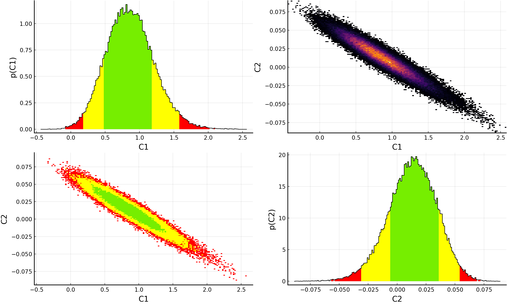
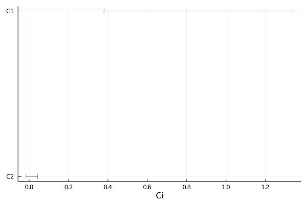

EFTfitter.jl - Tutorial
Table of contents:
It is recommended to store the inputs (i.e. parameters, observables, measurements and correlations) and the actual analysis in two separate files. This allows to simply load different configurations of the model. We will therefore also consider two files: tutorial_inputs.jl and runTutorial.jl.
File "tutorial_inputs.jl"
We start by defining all neccesary inputs to create an EFTfitterModel.
Parameters
We specify the parameters our model depends on and choose a prior for each of the parameters. The prior has to be specified in form of a BAT.jl prior.
For our example, we consider two parameters with the names C1 and C2. For C1 we choose a uniform (flat) prior in the range (-3, 3). For C2 we choose a gaussian prior with μ=0 and σ=0.5.
parameters = BAT.NamedTupleDist(
C1 = -3..3, # short for: Uniform(-3, 3)
C2 = Normal(0, 0.5) # Normal distribution
)A parameter can be fixed (and therefore excluded from the fit) by setting its prior to a certain value, e.g.: C2 = 0. Also see here for more information on priors in the BAT.jl documentation.
Observables
We now proceed to implement Functions that specify how the predicted values of the observables depend on the model parameters. For each observable, we need to provide a Function that returns the predicted value of the observable for certain values of the model parameters. In our example, we consider two observables (e.g. cross sections) by defining the two functions xsec1 and xsec2.
Note: The functions for the observables may only have the model parameters as their only argument. You can, however define a function that only depends on the parameters and that internally calls a more complex function and passes the corresponding arguments. In this example, the function xsec2 calls the function myfunc and passes further arguments (coeffs).
function xsec1(params)
c = [20.12, 5.56, 325.556]
return c[1] * params.C1 + c[2] * params.C1 * params.C2+ c[3] * params.C2
end
function xsec2(params)
coeffs = [2.12, 4.3, 12.6]
return myfunc(params, coeffs)
end
function myfunc(params, c)
return c[1] * params.C1 + c[2] * params.C1 * params.C2+ c[3] * params.C2
endIf your observable is a distribution, you can define a vector of functions with one function for each bin of the distribution. (You could also treat each bin as a separate observable as shown above.)
function diff_xsec_bin1(params)
coeffs = [2.2, 5.5, 6.6]
return myfunc(params, coeffs)
end
function diff_xsec_bin2(params)
coeffs = [3.3, 4.8, 7.6]
return myfunc(params, coeffs)
end
function diff_xsec_bin3(params)
coeffs = [4.9, 5.6, 8.9]
return myfunc(params, coeffs)
end
diff_xsec = [diff_xsec_bin1, diff_xsec_bin2, diff_xsec_bin3]Note: Another way to define a vector of functions for the bins of distributions is shown here in the advanced tutorial. This can be particularly useful when the predictions for the individual bins have a similar functional relation and only differ in terms of some coefficients, as it is the case here in this example.
Measurements
We can now enter measurements of the observables. This is done by defining a NamedTuple consisting of Measurement and MeasurementDistribution objects.
A Measurement consists of the observable, the measured numerical value and numerical values for the (multiple types of) uncertainties. The observable can be passed to the Measurement either as an Observable object or as a Function. When using the latter, the observable is assumed to be unconstrained. The uncertainties are passed as a NamedTuple. Each measurement has to provide uncertainty values for all of the (active) uncertainty types (see next section on Correlations). For a MeasurementDistribution, the corresponding inputs have to be passed as Vectors, where each element represents one bin of the distribution.
A Measurement can be excluded from the model by setting the switch active=false. For a MeasurementDistribution, the keyword active accepts true or false to (de)activate the whole distribution or a vector of booleans for (de)activating only certain bins.
measurements = (
Meas1 = Measurement(xsec1, 21.6, uncertainties = (stat=0.8, syst=1.8, another_unc=2.3),
active=true), # `active = false`: exclude measurement from fit (default: active = true)
Meas2 = Measurement(Observable(xsec2, min=0), 1.9,
uncertainties = (stat=0.6, syst=0.9, another_unc=1.1), active=true),
MeasDist = MeasurementDistribution(diff_xsec, [1.9, 2.93, 4.4],
uncertainties = (stat = [0.7, 1.1, 1.2], syst= [0.7, 0.8, 1.3], another_unc = [1.0, 1.2, 1.9]),
active=[true, false, true]), # `active = false`: exclude all bins from fit, `active = [true, true, false]`: exclude only third bin from fit
)Further information on the constructors see the API documentation of Measurement and MeasurementDistribution.
When using only one measurement or only one type of uncertainties, make sure to insert a comma, like: uncertainties = (stat = 0.5,) so that Julia can parse the NamedTuple correctly!
Correlations
The correlations between the uncertainties of the measurements need to be provided for each of the uncertainty types. We can pass them by defining a NamedTuple of Correlation objects that contain the corresponding correlation matrices. The correlation matrix for each type of uncertainty needs to have a size of $N \times N$, where $N$ is the number of measurements, counting each bin of a distribution. When a certain type of uncertainty should not be considered, it can be deactivated by setting active = false. This means that the uncertainty values given in the corresponding Measurement and MeasurementDistribution objects will not be used.
When assuming the uncertainties of all measurements are uncorrelated, you can use the NoCorrelation object for easily passing an identity matrix of the correct size.
When using a large number of measurements, entering the correlation matrix becomes quite impractical, especially if you want to add further measurements later. With the function to_correlation_matrix, it is possible to enter a correlation matrix by simply specifying the names of the measurements that should be correlated and the value of the corresponding correlation coefficient. When using a MeasurementDistribution, the inter-bin correlations can also be entered by passing a matrix. By appending _binX to the name of a MeasurementDistribution, the Xth bin of the distribution can be accessed. Note: This function is evaluated from top to bottom, so if you overwrite a specific correlation value, the last value entered will be used.
dist_corr = [1.0 0.5 0.0;
0.5 1.0 0.0;
0.0 0.0 1.0]
another_corr_matrix = to_correlation_matrix(measurements,
(:Meas1, :Meas2, 0.4), # correlate measurements :Meas1 and :Meas2 with a correlation coefficient of 0.4
(:Meas1, :MeasDist, 0.1), # correlate all bins of :MeasDist with :Meas1 with 0.1
(:MeasDist, :MeasDist, dist_corr), # correlate the bins of :MeasDist according to the matrix dist_corr
(:MeasDist_bin2, :MeasDist_bin3, 0.3), # correlate bin2 of :MeasDist with bin3 with 0.3 (overwrites the corresponding element set in the previous line, but ignored in fit since MeasDist_bin2 is inactive)
)correlations = (
stat = NoCorrelation(active=true), # will use the identity matrix of the correct size
syst = Correlation([1.0 0.5 0.3 0.2 0.2;
0.5 1.0 0.2 0.2 0.2;
0.3 0.2 1.0 0.2 0.2;
0.2 0.2 0.2 1.0 0.2;
0.2 0.2 0.2 0.2 1.0], active=false), # `active = false`: ignore all uncertainty values and correlations for this type of uncertainty
another_unc = Correlation(another_corr_matrix, active=true)
)File "runTutorial.jl"
Here, we create the EFTfitterModel from our inputs and run the actual analysis.
First, we need to setup EFTfitter, BAT and some other Julia packages:
using EFTfitter
using BAT # for sampling
using IntervalSets # for specifying the prior
using Distributions # for specifying the prior
using Plots # for plottingWe can then build the EFTfitterModel which combines all our inputs into one object that is then used to perform the analysis on.
model = EFTfitterModel(parameters, measurements, correlations)To sample the posterior distribution, we specify that our EFTfitterModel should be used and then setup BAT.jl to sample the EFTfitter likelihood.
posterior = PosteriorDensity(model)
algorithm = MCMCSampling(mcalg = MetropolisHastings(), nsteps = 10^5, nchains = 4)
samples = bat_sample(posterior, algorithm).result;For further information on settings & algorithms when sampling with BAT.jl see the BAT.jl tutorial and documentation.
We can then inspect the results of the sampling using BAT.jl's SampledDensity, giving a summary of the sampling and the results of the model parameters.
sd = SampledDensity(posterior, samples)
display(sd)BAT.jl - SampledDensity
──────────────────────────────
Sampling:
─────────────────────────
total number of samples: 103343
effective number of samples: (C1 = 19897.99484950266, C2 = 18106.884734831812)
Parameter estimates:
─────────────────────────
number of free parameters: 2
Table with 5 columns and 2 rows:
parameter mean std global_mode marginal_mode
┌────────────────────────────────────────────────────────────
1 │ C1 0.864514 0.349673 0.821192 0.81
2 │ C2 0.0129843 0.0210368 0.0155112 0.0165
Covariance matrix:
─────────────────────────
2×2 Named Array{Float64,2}
cov ╲ │ C1 C2
───────┼─────────────────────────
C1 │ 0.122271 -0.0070394
C2 │ -0.0070394 0.000442548Information about the smallest 1d intervals containing p% proability can be obtained using the get_smallest_interval_edges function:
intervals_1d_C1 = get_smallest_interval_edges(samples, :C1, 0.9, bins=200, atol=0.1)
println("lower interval edges: $(intervals_1d_C1.lower)")
println("upper interval edges: $(intervals_1d_C1.upper)")The keyword atol controls the absolute tolerance for which intervals are joined together when they are seperated less than this value. This is particularly useful when a large number of bins is used.
Of course, plotting the resulting posterior distributions is also simple using Plots.jl and the BAT.jl plotting recipes:
p = plot(samples)
savefig(p, "plot.pdf")
For information on how to customize plots of the samples, please see the BAT.jl plotting documentation and examples.
p = plot(samples, 0.9)
savefig(p, "plot_1d.pdf")
For customizing the plots of the 1D intervals, also see the EFTfitter plotting documentation and tutorial.
This page was generated using Literate.jl.